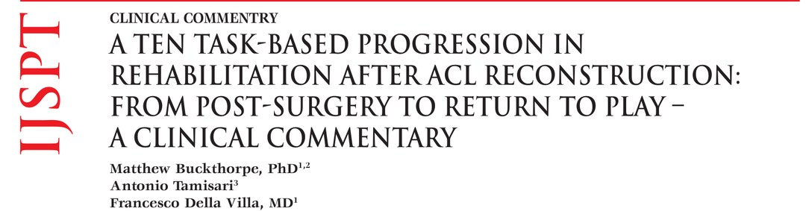
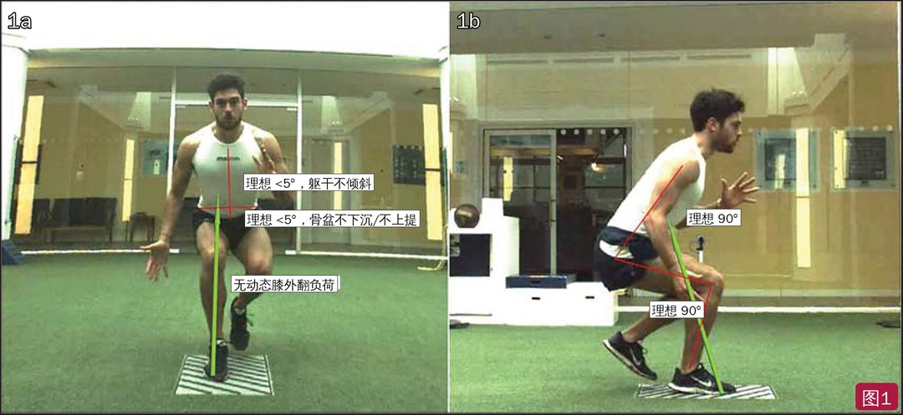
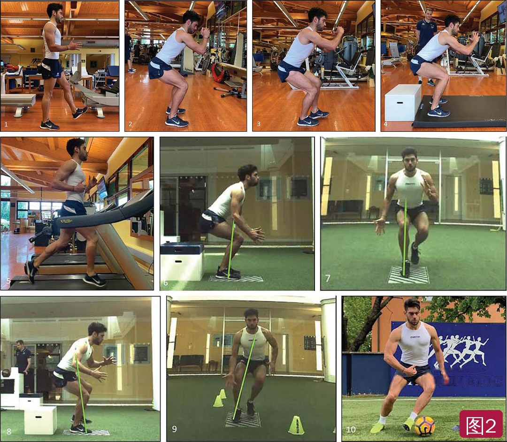
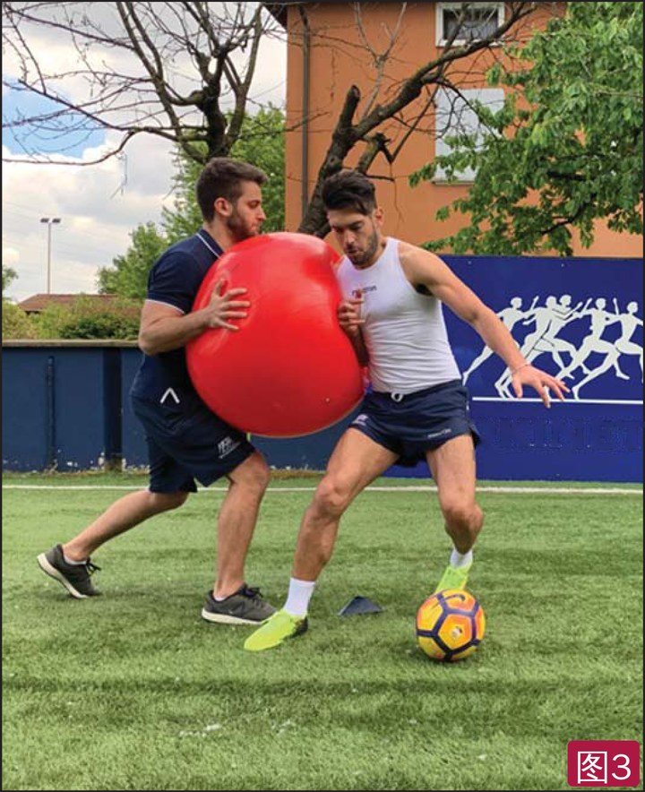

🔖原文首页（IJSPT 2020 年第 15 卷第 4 期）
📚 文献卡片
▪ 英文原题：A Ten Task-Based Progression in Rehabilitation after ACL Reconstruction: From Post-Surgery to Return to Play – A Clinical Commentary（ACL 重建术后康复的十项任务进阶：从术后到重返赛场）
▪ 作者：Matthew Buckthorpe, PhD · Antonio Tamisari · Francesco Della Villa, MD
▪ 机构：Isokinetic 医疗集团，FIFA 卓越医学中心（意大利博洛尼亚；英国伦敦）
▪ 期刊：International Journal of Sports Physical Therapy（IJSPT）
▪ 年卷期：2020;15(4):611-623
▪ PMCID：PMC7735691
▪ 文章类型：临床评论（Clinical Commentary）
▪ 关键词：biomechanics · criterion-based progressions · movement system · performance rehabilitation · screening
ACL 重建（ACLR）后重返运动率不理想、再伤风险高。动作再训练越来越受重视：ACL 损伤会让双侧下肢的动作质量都发生改变，动作功能障碍也是初次和再次 ACL 损伤的危险因素。
问题在于，大家知道“为什么”要练动作，却不清楚“怎么练、练什么、什么时候练”。比如开始跑步常按时间定在术后约 12 周——但这个时间点和移植物愈合无关，患者跑不了就觉得“失败”，能跑就觉得“正常”，却很少评估功能。另一个趋势是功能训练上得太早，患者准备不足，增加再伤、关节过载和代偿的风险。
作者提出一个十项任务进阶体系：从正常走路一直到专项变向，每一项都有进入前需要满足的力量和活动度标准，并配合四项监测，给患者结构感和自主性，也方便医疗团队沟通。
| 环节 | 要点 |
|---|---|
| 三种负荷 | 峰值负荷（如地面反作用力峰值）· 总量负荷（负荷 × 次数）· 加载速率 |
| 最佳负荷 | 既保护移植物不过载，又给足刺激促进神经肌肉适应和移植物重塑 |
| 髌股保护 | 闭链训练中屈膝越深髌股压力越大，早期高负荷功能训练限制在屈膝 0°～80° |
| 四项监测 | 运动后反应（疼痛、肿胀）· 动作质量 · 力量 · 肌肉酸痛 |
| 十项任务 | 走 → 双腿蹲 → 单腿蹲 → 双腿落地 → 跑台跑 → 双腿跳深 → 单腿减速 → 单腿跳深 → 90° 切步 → 专项反应性变向 |
一句话概括：每进一步都要过力量和活动度这一关，动作质量不达标就降级，疼痛肿胀加重就暂停。
• 负荷由神经肌肉系统吸收，也由肌腱、韧带、关节被动吸收；力量不足时离心吸收能力差，就更多依赖被动结构
• 负荷在踝、膝、髋之间分配，取决于动作策略：膝主导模式增加膝负荷，回避膝的策略则减少膝负荷
• Laughlin 等：女性 30 cm 单腿落地时 ACL 峰值负荷约 0.7 倍体重（约 440 N），远低于约 1300 N 的断裂阈值；但这只是矢状面，胫骨/股骨旋转等不良力学会让负荷更接近损伤阈值，因此额状面和水平面控制是动作再训练的重点
• ACLR 后髌股疼痛常见；弓步、腿举等闭链训练在接近完全屈膝时股四头肌力和髌股压力最大，早期高负荷功能训练建议限制在屈膝 0°～80°
| 监测 | 问题 | 做法 |
|---|---|---|
| 运动后反应 | 关节受得了吗？ | 训练应基本无痛；只有上次训练后疼痛（数字评分）和肿胀（推扫试验）都没有增加，才进入下一项。过载指标：髌骨处肿胀增加 >1 cm 或疼痛 +1 分 |
| 动作质量 | 任务是不是太难？ | 用额状面三条线（躯干、骨盆、下肢）和矢状面（踝-膝、膝-髋）对线来教和监测（图1）；做不好就简化任务或减负荷（不加重量或加支撑） |
| 力量 | 够不够强？ | 伸膝力量是功能进阶的主要障碍；可用等速/等长测力、手持测力计、腿举 8RM 或 10RM、测力台等长深蹲评估 |
| 肌肉酸痛 | 负荷是否太大？ | 迟发性肌肉酸痛反映肌肉负荷和恢复需求，酸痛明显时调整后续训练 |

🔖图1：易教易用的动作分析模型。1a 额状面三条线——躯干稳定/对线（理想 <5°，不倾斜）、骨盆稳定/对线（理想 <5°，不下沉/上提）、下肢对线（无动态膝外翻）；1b 矢状面，视任务而定，看踝到膝、膝到髋的对线（理想约 90°）（图中英文标注已改为中文）
常见任务的地面反作用力：双腿落地约 1～1.5 倍体重，跑台跑 2～3 倍，单腿增强式 2～6 倍。了解下肢产生和承受力量的能力，才能判断“什么时候”可以开始这些有风险的任务。

🔖图2：ACL 重建术后的十项任务进阶——1 走路、2 双腿蹲、3 单腿蹲、4 双腿落地、5 跑台跑、6 双腿跳深、7 单腿减速、8 单腿跳深、9 90° 切步、10 专项变向（第 10 图背景横幅英文已去除）
• 术后通常 2～4 周不能完全负重或脱拐；异常步态与肌无力、功能差、满意度低和骨关节炎等并发症有关，回到跑步时还会加重
• 先恢复活动度：脱拐前要完全伸膝并能控制；股四头肌抑制会妨碍力量恢复
• 直腿抬高时仍有伸膝迟滞，若到术后第 5 周还没消除，6 个月时更可能明显股四头肌无力
• 脱拐条件：完全主动伸膝、积液得到控制、无关节过载（肿胀增加 >1 cm 或疼痛 +1 分）、直腿抬高无伸膝迟滞
• Neitzel 等：部分患者术后 12 个月深蹲时两腿负重仍不对称，并与功能差有关
• 双腿蹲是三关节屈伸 + 躯干控制的基础动作，也是落地、跳跃、增强式训练的动作模式
• 进阶：徒手蹲、靠墙蹲、高脚杯蹲、后蹲、前蹲、过顶蹲，先不负重再逐步加重；早期控制在屈膝 <90°；半月板修复等情况下可能要限制
• 最具功能性的基础动作，是所有单腿加速、减速、落地动作的基础
• 建议先能单腿腿举约 100% 体重，才有足够力量承受单腿蹲
• 进阶：分腿蹲（前腿约承担 60% 体重）、后撤弓步、行进弓步、上台阶、单腿蹲；先在当前任务加负荷再进阶（如 80 kg 运动员分腿蹲加 20 kg，前腿约多承担 12 kg，相当于约 75% 体重）
• 第一个“离地”任务，地面反作用力约 1.5～2 倍体重（每条腿约 1 倍，且加载速率高）
• 开始前建议腿举 8 次能达到单腿 1 倍体重、双腿 2 倍体重
• 训练所需速度下的离心控制，为单腿落地和跑步做准备；进阶：跳箱落地、原地跑后落地、跳起落地，可垂直、水平或旋转；泳池、沙地、蹦床或软垫可降低峰值力
• 跑步是重要里程碑，每一步承受约 2～3 倍体重
• 跑台上便于给视觉或视频反馈，改善跑姿；可分析步长、触地时间和力吸收
• 慢速（8 km/h）跑姿正常是进阶到单腿减速和落地训练的前提；跑台上的力学恢复后，才能到户外跑或做敏捷训练；接近最大冲刺速度下无痛、对称是后期目标
• 注意：许多功能指标在术后第一年内都不会完全恢复正常
• 牵张-缩短循环训练，发展爆发速度、力量和功率，优于传统抗阻训练；也能提高关节觉察和本体感觉
• 冲击力约 2～6 倍体重；高强度增强式会造成肌肉损伤和关节过载
• 双腿跳深中控制动态膝外翻与 ACL 损伤/再伤风险有关；青少年跳深时膝外展力矩高，精英成年运动员没有，说明技术很关键
• ACL 损伤多发生在减速和落地中，这类动作危险，心理上也有挑战；单腿负荷约 2～3 倍体重
• 开始前建议：伸膝力量与健侧差距在 20% 以内（LSI ≥80%）；单腿腿举能推 1.5 倍体重（离心 2 倍）
• 先在吸能表面（垫子、蹦床、沙地）练，台阶高度 20 → 30 → 40 cm 或逐步加速度，再过渡到跑动中的自然减速；目标是直线跑后单腿减速控制和力学良好
• 变向类动作就是单腿增强式的性质；从单平面进阶到多平面
• 冲击力 2～6 倍体重，离心成分会带来明显肌肉酸痛，需仔细监测；单腿跳深动作质量和力吸收良好后，才进阶到旋转增强式或变向
• 恢复高负荷运动任务中的对称性可能降低再伤风险；多方向和高速度会增加膝负荷
• 精英手球运动员侧切时膝外展负荷是跳深时的 5 倍
• 从简单动作、小角度开始；先慢速分解（两个动作间稍停），用一两步进入，低速学会技术后再逐步提高助跑速度
• 90° 切步控制良好后，才进入专项（反应性、对抗、技术）训练
• 逐步过渡到更高速度、反应性多方向任务，再到视觉-运动要求更高（选择更多）的专项任务
• 反应性动作比预先计划的动作更挑战动作质量、膝负荷更大：先在预设任务中动作安全，再练反应性动作，重返运动前确认反应性动作也安全
• ACL 损伤常发生在复杂刺激、注意力在外部时；外部注意焦点训练的保持效果更好；从有意识控制、少干扰过渡到混乱、反应性的比赛情境
• 对抗项目还要加入扰动/接触训练（图3）

🔖图3：场上扰动训练，为重返赛场的身体接触做准备——运动员在受到瑞士球或球员间接触时，仍要保持良好控制、力学和控球（背景横幅英文已去除）
表1 ACL 重建术后十项任务进阶：任务、训练类别，以及可无限制练习所需的力量和膝活动度
| 序号 | 任务类别 | 训练/目标动作 | 所需力量 | 所需膝活动度 |
|---|---|---|---|---|
| 1 | 走路 | 无跛行、无辅助行走（如脱拐） | 股四头肌募集良好 | 完全伸膝 |
| 2 | 双腿基础动作 | 双腿蹲到 90°，两腿负重不对称 <20% | 单腿腿举 50% 体重 | 完全伸膝/屈曲 >90° |
| 3 | 单腿基础动作 | 单腿蹲到 90° | 单腿腿举 80% 体重 | 屈曲 >120° |
| 4 | 双腿落地 | 次最大跳后的双腿落地控制 | 单腿腿举 100% 体重和/或双腿腿举/深蹲 150% 体重 | 屈曲 >130° |
| 5 | 跑步 | 跑台 8 km/h | 单腿腿举/深蹲 125% 体重和/或等长伸膝 LSI >70% | 屈曲 >130° |
| 6 | 双腿增强式 | 30 cm 双腿跳深 | 伸膝 LSI >80%，且单腿腿举/深蹲 125% 体重或 200% 体重 | 完全 |
| 7 | 单腿跳/落地 | 向前和侧向跑动中的单腿减速 | 等速伸膝 LSI >80% 和/或单腿腿举/深蹲 150% 体重 | 完全 |
| 8 | 单腿增强式 | 单腿跳深 | 同上 | 完全 |
| 9 | 预设的多方向动作 | 90° 切步 | 同上 | 完全 |
| 10 | 专项动作 | 45° 反应性变向 | 等速伸膝 LSI >90% 和/或单腿腿举/深蹲 200% 体重 | 完全 |
力量用等长或等速伸膝、腿举和/或深蹲测试；深蹲力量指测力台和等长测试架上测得的力占体重的百分比，而不是自由重量深蹲额外加的重量。LSI：肢体对称指数。
• 性质：临床评论，由理论、现有证据和作者大量实践经验整合而成；没有验证这套进阶能否降低再伤或提高重返率
• 亮点：把“什么时候做什么”量化成力量和活动度门槛，配合疼痛、肿胀、动作质量、酸痛四项监测，便于团队沟通和患者自我管理，也可能推广到其他下肢重伤
• 门槛多为经验值：腿举倍数、LSI 等阈值大多是作者建议，缺少直接验证；部分评估（如测力台等长深蹲）需要设备
• 前后数值不一致：单腿减速前的力量，正文写“单腿腿举 1.5 倍体重（离心 2 倍）”，与表 1 一致，但正文双腿落地要求“单腿 1 倍、双腿 2 倍体重”，表 1 写“单腿 100% 和/或双腿 150%”；双腿落地的地面反作用力一处写 1～1.5 倍，一处写 1.5～2 倍；单腿蹲正文要求腿举约 100% 体重，表 1 写 80%
• 小瑕疵：文章类型拼成 “CLINICAL COMMENTRY”；“cannot not fully weight bear”多一个 not；表 1 任务 6 的“125% 或 200%”含义不清
① 走路：完全伸膝、无伸膝迟滞、肿痛不加重才脱拐
② 双腿蹲 → ③ 单腿蹲：腿举 50% → 80%～100% 体重，屈膝先控制在 90° 内
④ 双腿落地 → ⑤ 跑台跑：腿举 100%～125% 体重或伸膝 LSI >70%，屈曲 >130°，先慢速 8 km/h
⑥ 双腿跳深 → ⑦ 单腿减速 → ⑧ 单腿跳深：伸膝 LSI >80%、单腿腿举 125%～150% 体重，先软表面低高度
⑨ 90° 切步 → ⑩ 反应性变向：先预设后反应，最后 LSI >90%、单腿腿举 200% 体重
★ 贯穿始终：疼痛肿胀不加重、动作质量过关、肌肉酸痛可恢复，才往下走
欢迎关注骨科康复小黄公众号，获取更多物理治疗的专业知识！
📄参考文献：
Buckthorpe M, Tamisari A, Della Villa F. A Ten Task-Based Progression in Rehabilitation after ACL Reconstruction: From Post-Surgery to Return to Play – A Clinical Commentary. Int J Sports Phys Ther. 2020;15(4):611-623. PMCID: PMC7735691.
文中图片均来自原文：图 1 英文标注已改为中文，图 2、图 3 背景横幅英文已去除；表 1 已译为中文，仅用于学术交流。